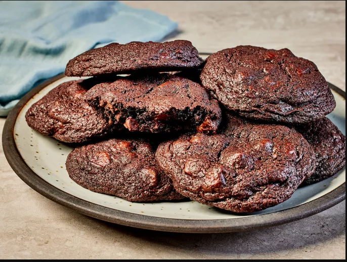

Chocolate Chip Cookies

These chocolate chocolate chip cookies are made with cocoa powder and chocolate chips
This recipe is as decadent as it gets.
Ingredients needed
- 1 ½ cups white sugar
- Two sticks of softened butter
- Two eggs lend moisture
- Vanilla extract enhances the overall flavor
- All-purpose flour
- Cocoa powder
- Baking soda
- A pinch of salt
- Two cups of semisweet chocolate chips
- (optional) Walnuts
Steps:
- Gather all ingredients and preheat the oven to 350 degrees F (175 degrees C)
- Beat sugar, butter, eggs, and vanilla in a large bowl until light and fluffy.
- Combine flour, cocoa powder, baking soda, and salt in another bowl; stir into butter mixture until well
blended.
- Mix in chocolate chips and walnuts. Drop spoonfuls of dough 2 inches apart onto ungreased cookie sheets.
-
Bake in the preheated oven just until set, 8 to 10 minutes.
Cool slightly on the cookie sheets before transferring to wire racks to cool completely.
- Enjoy!